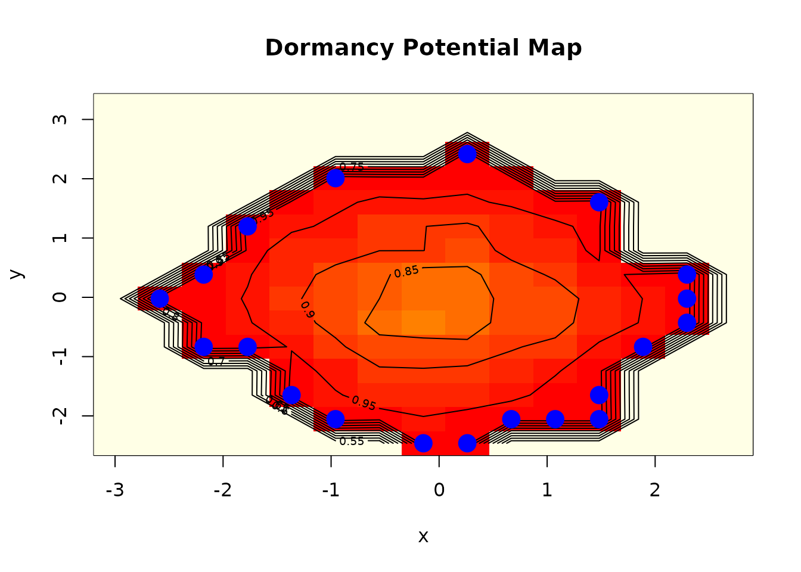

Introduction to Dormancy: Detecting Hidden Patterns in Data
Dany Mukesha
Source:vignettes/dormancy.Rmd
dormancy.RmdOverview
The dormancy package introduces a novel framework for detecting and analyzing dormant patterns in multivariate data. Unlike traditional pattern detection methods that focus on currently active relationships, dormancy identifies statistical patterns that exist but remain inactive until specific trigger conditions emerge.
What are Dormant Patterns?
A dormant pattern is a genuine statistical relationship that is currently suppressed by prevailing conditions in your data. Consider these real-world analogies:
- Biological dormancy: Seeds can remain dormant for years, only germinating when conditions (temperature, moisture) are right
- Geological dormancy: Fault lines can be dormant for centuries before triggering earthquakes
- Epidemiological latency: Pathogens can exist in a latent state before becoming active
In data analysis, dormant patterns manifest as:
- Relationships that are strong in specific data regions but weak overall
- Correlations that only emerge when certain threshold conditions are met
- Patterns hidden by confounding variables that, when controlled for, reveal strong associations
Why Dormancy Matters
Traditional correlation analysis can miss dormant patterns because:
- Aggregate statistics mask conditional relationships
- Weak overall correlations may hide strong local correlations
- Threshold effects create piecewise relationships
- Phase-dependent patterns vary across the data space
The dormancy package addresses these limitations with specialized detection methods.
Getting Started
Basic Detection
Let’s create a simple example with a dormant pattern:
set.seed(42)
n <- 500
# Create variables
x <- rnorm(n)
condition <- sample(c(0, 1), n, replace = TRUE)
# Relationship between x and y only exists when condition == 1
y <- ifelse(condition == 1,
0.8 * x + rnorm(n, 0, 0.3), # Strong relationship
rnorm(n)) # No relationship
data <- data.frame(x = x, y = y, condition = factor(condition))
# Overall correlation is weak
cor(data$x, data$y)
#> [1] 0.4575864The overall correlation masks the strong relationship that exists under specific conditions. Let’s detect the dormant pattern:
result <- dormancy_detect(data, method = "conditional", verbose = TRUE)
#> Starting dormant pattern detection using method: conditional
#> Analyzing 1 variable pairs...
#> Detection complete. Found 0 dormant patterns.
print(result)
#> Dormancy Detection Results
#> ==========================
#>
#> Method: conditional
#> Threshold: 0.3
#> Observations: 500
#> Variables: 2
#>
#> Patterns detected: 0The detection reveals that the relationship between x and y is
dormant - it only becomes active when condition == 1.
Detection Methods
The package provides four complementary detection methods:
1. Conditional Detection
Identifies patterns that are conditionally suppressed - active only under specific conditions.
result_cond <- dormancy_detect(data, method = "conditional")This method works by segmenting the data space and comparing relationship strengths across segments.
2. Threshold Detection
Identifies patterns that emerge when variables cross specific thresholds.
set.seed(123)
n <- 400
x <- runif(n, -2, 2)
# Relationship only emerges for extreme values of x
y <- ifelse(abs(x) > 1,
0.9 * sign(x) + rnorm(n, 0, 0.2),
rnorm(n, 0, 0.5))
data_thresh <- data.frame(x = x, y = y)
result_thresh <- dormancy_detect(data_thresh, method = "threshold")
print(result_thresh)
#> Dormancy Detection Results
#> ==========================
#>
#> Method: threshold
#> Threshold: 0.3
#> Observations: 400
#> Variables: 2
#>
#> Patterns detected: 03. Phase Detection
Identifies patterns that exist in specific phase regions of the data space.
set.seed(456)
n <- 300
t <- seq(0, 4*pi, length.out = n)
x <- sin(t) + rnorm(n, 0, 0.2)
y <- cos(t) + rnorm(n, 0, 0.2)
# Add relationship only in certain phases
phase <- atan2(y, x)
y <- ifelse(phase > 0 & phase < pi/2,
0.7 * x + rnorm(n, 0, 0.2),
y)
data_phase <- data.frame(x = x, y = y)
result_phase <- dormancy_detect(data_phase, method = "phase")4. Cascade Detection
Identifies patterns that could trigger chain reactions through other variables.
set.seed(789)
n <- 300
x <- rnorm(n)
y <- rnorm(n)
z <- rnorm(n)
# Relationship x-y emerges when z is extreme
y <- ifelse(abs(z) > 1.5,
0.8 * x + rnorm(n, 0, 0.2),
y)
data_cascade <- data.frame(x = x, y = y, z = z)
result_cascade <- dormancy_detect(data_cascade, method = "cascade")Trigger Analysis
Once dormant patterns are detected, analyze their trigger conditions:
set.seed(42)
n <- 500
x <- rnorm(n)
z <- sample(c(0, 1), n, replace = TRUE)
y <- ifelse(z == 1, 0.8 * x + rnorm(n, 0, 0.3), rnorm(n))
data <- data.frame(x = x, y = y, z = factor(z))
result <- dormancy_detect(data, method = "conditional")
if (nrow(result$patterns) > 0) {
triggers <- dormancy_trigger(result, sensitivity = 0.5, n_bootstrap = 50)
print(triggers)
}The trigger analysis provides: - Specific trigger conditions for each pattern - Confidence intervals via bootstrap - Activation probabilities - Actionable recommendations
Depth Measurement
Measure how “deeply asleep” each dormant pattern is:
if (nrow(result$patterns) > 0) {
depths <- dormancy_depth(result, method = "combined")
print(depths)
}Depth measurements help prioritize monitoring: - Shallow dormancy: Easily activated, needs immediate attention - Deep dormancy: Requires significant changes to activate, lower priority
Risk Assessment
Evaluate the risk associated with dormant patterns:
if (nrow(result$patterns) > 0) {
risk <- dormancy_risk(result, time_horizon = 1, risk_tolerance = 0.3)
print(risk)
}Risk assessment considers: - Activation probability - Impact magnitude - Cascade potential - Uncertainty in estimates
Awakening Simulation
Simulate what would happen if a dormant pattern activated:
if (nrow(result$patterns) > 0) {
awakening <- awaken(result, pattern_id = 1, intensity = 1, n_sim = 100)
print(awakening)
}This is valuable for: - Scenario planning - Stress testing - Understanding potential system behaviors
Hibernation Analysis
Identify patterns that were once active but have become dormant:
set.seed(42)
n <- 400
time <- 1:n
x <- rnorm(n)
# Relationship that fades over time
effect_strength <- exp(-time / 150)
y <- effect_strength * 0.8 * x + (1 - effect_strength) * rnorm(n)
data_time <- data.frame(time = time, x = x, y = y)
hib <- hibernate(data_time, time_var = "time", window_size = 0.15)
print(hib)
#> Pattern Hibernation Analysis
#> ============================
#>
#> Window size: 60
#> Hibernation threshold: 0.3
#>
#> Hibernated Patterns:
#> variable_1 variable_2 early_correlation late_correlation correlation_change
#> x~y x y 0.9398223 0.175471 0.7643512
#> hibernation_time hibernation_depth
#> x~y 133.5 0.7643512
#>
#> Revival Potential:
#> variable_pair revival_potential revival_difficulty
#> 1 x~y 0.2356488 DifficultScouting for Potential
Map the data space to find regions where dormant patterns might emerge:
set.seed(42)
n <- 300
x <- rnorm(n)
y <- rnorm(n)
# Create a region with hidden pattern
mask <- x > 1 & y > 1
y[mask] <- 0.9 * x[mask] + rnorm(sum(mask), 0, 0.1)
data_scout <- data.frame(x = x, y = y)
scout <- dormancy_scout(data_scout, grid_resolution = 15, scout_method = "density")
print(scout)
#> Dormancy Scout Results
#> ======================
#>
#> Method: density
#> Grid resolution: 15
#>
#> Variable Pair Analysis:
#> variable_pair max_potential mean_potential n_hotspots
#> x~y x~y 0.9833333 0.7008741 20
#>
#> Top Dormancy Hotspots:
#> x_coord y_coord potential variable_pair
#> 2 0.2611848 -2.46133548 0.9833333 x~y
#> 5 1.0747535 -2.05487798 0.9833333 x~y
#> 6 1.4815379 -2.05487798 0.9833333 x~y
#> 9 -2.1795214 -0.83550548 0.9833333 x~y
#> 13 -2.5863057 -0.02259049 0.9833333 x~y
#> 16 2.2951066 0.38386701 0.9833333 x~y
#> 17 -1.7727370 1.19678201 0.9833333 x~y
#> 19 -0.9591683 2.00969700 0.9833333 x~y
#> 20 0.2611848 2.41615450 0.9833333 x~y
#> 1 -0.1455995 -2.46133548 0.9800000 x~yVisualization
Plot the results:
# Overview plot
dormancy:::plot.dormancy(result, type = "overview")
# Pattern network
dormancy:::plot.dormancy(result, type = "patterns")
# Risk-focused
dormancy:::plot.dormancy(result, type = "risk")
# Scout map
dormancy:::plot.dormancy_map(scout)
dormancy:::plot.dormancy_map(scout)
Practical Applications
Financial Risk Analysis
Detect dormant correlations that could activate during market stress:
# Assume financial_data has returns for multiple assets
result <- dormancy_detect(financial_data, method = "threshold")
risk <- dormancy_risk(result, time_horizon = 30) # 30-day horizonQuality Control
Find patterns that only emerge under certain production conditions:
# Assume production_data with process variables
result <- dormancy_detect(production_data, method = "conditional")
triggers <- dormancy_trigger(result)Environmental Monitoring
Identify dormant patterns that could signal ecological shifts:
# Assume environmental_data with sensor readings
scout <- dormancy_scout(environmental_data)
hib <- hibernate(environmental_data, time_var = "date")Summary
The dormancy package provides a comprehensive toolkit for:
- Detection: Four methods for finding dormant patterns
- Characterization: Understand trigger conditions and dormancy depth
- Risk Assessment: Quantify activation risk and potential impact
- Simulation: Explore “what-if” scenarios
- Monitoring: Track patterns that have hibernated or scout for future risks
By focusing on patterns that could become active rather than just currently active patterns, you gain insights into latent risks and opportunities that traditional methods miss.